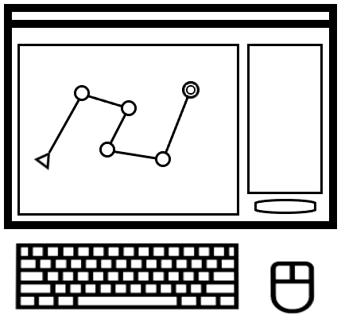
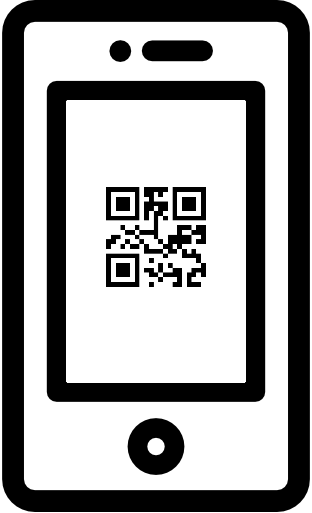

<div class="easyo-container-fit">

    <div class="wrapper-inicio">
        <div class="contenido-inicio">

            <div class="item-esquema">
                
                <div>
                    <span class="orden-esquema">1</span>
                    <span class="texto-esquema">Idea un circuito o carrera</span>
                </div>
            </div>

            <div class="item-esquema">
                
                <div>
                    <span class="orden-esquema">2</span>
                    <span class="texto-esquema">Utiliza la web para organizar los controles, recorridos y mapas</span>
                </div>
            </div>

            <div class="item-esquema">
                
                <div>
                    <span class="orden-esquema">3</span>
                    <span class="texto-esquema">Tus participantes usarán la app móvil para registrar los controles y ver sus resultados</span>
                </div>
            </div>

        </div>
    
        <!-- Panel lateral de registro -->
        <div class="lateral-inicio">
            <h3>¿Quieres probar?</h3>
            <p>EasyOrienteering es <b>completamente gratuito</b> y fácil de usar.</p>
            <button>Regístrate</button>
        </div>
    </div>
    
</div>
